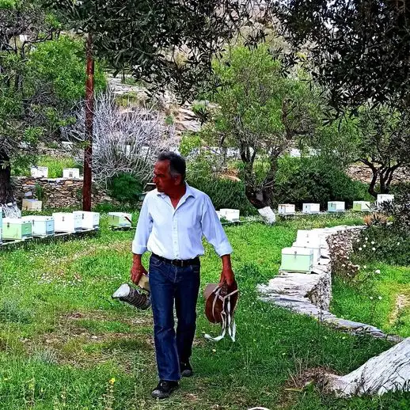

Honey
Entirely homemade and artisanal
Honey has always held a special place in human culture. Its colour and harmonious aromas have made it a product in a class of its own. It symbolises, in turn, power, pleasure, a remedy, energy, immunity and many other things.

Its benefits are well established. Honey even appears to be an excellent aid in the treatment of diabetes; it also has an effect on lipids, cholesterol, certain liver enzymes and the pancreas. This natural and delicious product can be consumed by infants over one year old, given its nutritional benefits, as well as by people with diabetes.
Honey has been used for therapeutic purposes since ancient times: Hippocrates already recommended its use to treat open wounds and throat infections. Clearly, it is better to sweeten our dishes with honey rather than sugar: honey consists mainly of fructose and glucose, a slow-release sugar that is particularly suitable for athletes. When used in baking, it retains moisture, which means that honey cakes keep for longer without drying out.
Production at La Maison Vert Amande is entirely homemade and artisanal. We harvest our honey with the utmost care and extract it by hand, bottling it directly (which preserves its delicate floral aromas) here at La Maison Vert Amande. We do not buy in honey from other producers or offer contract processing. We are producers from start to finish, and that makes all the difference.
We guarantee high-quality honey. Our product labels feature a carefully designed look. Our honey is neither adulterated nor heated. To ensure high-quality genetics, our swarms are productive and in excellent health.
Working with these insects is fascinating. By respecting the bees and their work, raising consumer awareness of environmental protection, giving consumers access to high-quality honey, and relying on mutual support and coordination with neighbouring beekeepers – who also uphold the values underpinning their practices (sustainable development, biodiversity) – rather than adding to a level of competition that undermines the entire profession, this enables us to make a sustainable living from our trade.
Giorgos
Professional beekeeper
George has been a professional beekeeper for over 40 years. The business, which was very small at the start, has grown over the years. Every year is different. Harvests can be excellent or poor, or even virtually non-existent. The consequences are immediate: the investments needed to support the business’s growth must be reassessed and carefully considered.
Beekeeping is not like keeping a dog or a cat. You have to realise that there will be demands and constraints, and that you will have to face difficulties. Beekeeping requires thought, attentiveness, time to devote to it, and stability in both your social and professional life. Your life must be in harmony with beekeeping.
At La Maison Vert Amande, our methods are simple and effective. Because we are passionate about what we do and because our aim is to produce high-quality honey, we do everything we can to contribute, day by day, to the development and wellbeing of the bees.
